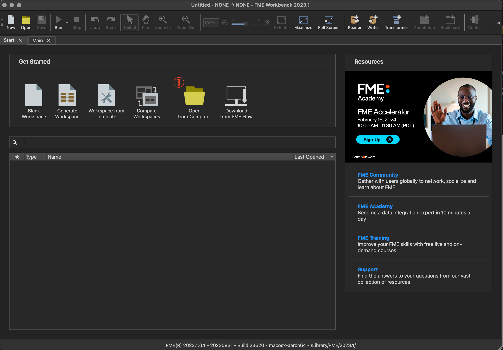
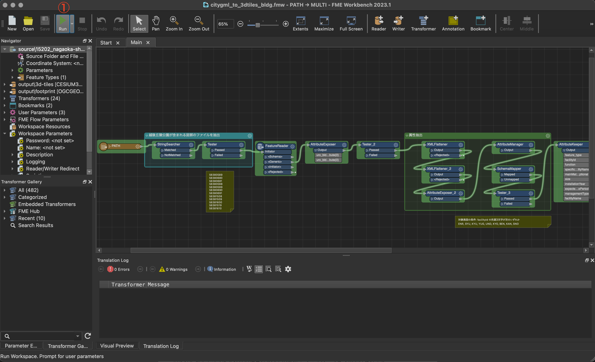
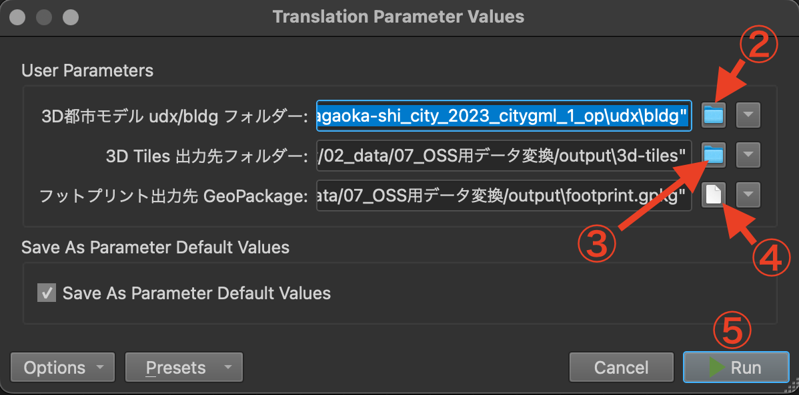

操作マニュアル
1 本書について
本書では、公園管理システム用CityGML変換ツール（以下「本変換ツール」という。）の操作手順について記載しています。
2 使い方
2-1 FME Formの起動
本変換ツールは、FME FormのFME Workbench（ワークベンチ）で実行します。FME Workbenchを実行すると以下の画面が表示されます。
①ワークスペースの読み込み 本リポジトリのworkspace/以下に格納されたワークスペース（.fmw）ファイルを選択します。
| ファイル名 | 処理対象 | |
|---|---|---|
| 1 | citygml_to_3dtiles_bldg.fmw | 3D都市モデル（CityGML）建築物モデル |
| 2 | citygml_to_3dtiles_brid.fmw | 3D都市モデル（CityGML）橋梁モデル |
| 3 | citygml_to_3dtiles_frn.fmw | 3D都市モデル（CityGML）都市設備モデル |
| 4 | citygml_to_3dtiles_wtr.fmw | 3D都市モデル（CityGML）水部モデル |
| 5 | citygml_to_mvt_area.fmw | 3D都市モデル（CityGML）区域モデル |
| 6 | citygml_to_mvt_trk.fmw | 3D都市モデル（CityGML）徒歩道モデル |
| 7 | obj_to_3dtiles_fence_gate_signboard.fmw | 3D都市モデル（CityGML）都市設備モデル、GISデータ、柵・門・看板の3Dモデル（OBJ） |
| 8 | obj_to_3dtiles_solitary_tree.fmw | 単独木の3Dモデル（OBJ）、植物管理台帳、3D都市モデル（CityGML）植生モデル |
| 9 | photo_and_label_czml.fmw | ①〜⑧で作成したフットプリントGeoPackageデータ、写真 |

2-2 ワークスペースの実行
① 実行
・「Run」ボタンを押下するとファイル/フォルダ選択のダイアログが表示され、入力データ、出力先を指定するウィンドウが開きます。

② 入力データ（ディレクトリ）の指定
・変換元のデータ（CityGML、Obj, gdb）を指定します。このワークスペースばローカルに置かれたファイルを参照するように設定されていますが、リモートのAmazon Simple Storage Servideなどを参照する場合は、参照先を適宜変更してください。
③ 出力先ディレクトリの指定1
・3D TIles, MVT, CZMLの出力先を指定します。このワークスペースばローカルのディレクトリを参照するように設定されていますが、リモートのAmazon Simple Storage Servideなどを参照する場合は、参照先を適宜変更してください。
④ 出力先ディレクトリの指定2
・フットプリントデータ（GPKG）の出力先を指定します。このワークスペースばローカルのディレクトリを参照するように設定されていますが、リモートのAmazon Simple Storage Servideなどを参照する場合は、参照先を適宜変更してください。
⑤ 実行
・②〜④で入出力データの指定が完了したら、「Run」ボタンを押下して、ワークスペースを実行します。

3 出力データ
各ワークフローを実行して出力されるデータは以下のとおりです。
| ワークフロー名 | 出力データ | 内容 | データ形式 |
|---|---|---|---|
| citygml_to_3dtiles_bldg.fmw | ../output/3d-tiles/bldg/ | 建築物モデルに含まれる公園施設の可視化用3D Tiles | 3D Tiles |
| ../output/footprint.gpkg | 建築物モデルに含まれる公園施設のフットプリント | GeoPackage | |
| citygml_to_3dtiles_brid.fmw | ../output/3d-tiles/brig/ | 橋梁モデルに含まれる公園施設の可視化用3D Tiles | 3D Tiles |
| ../output/footprint.gpkg | 橋梁モデルに含まれる公園施設のフットプリント | GeoPackage | |
| citygml_to_3dtiles_frn.fmw | ../output/3d-tiles/frn/ | 都市設備モデル（DM属性で記述されている柵・門・看板を除く）に含まれる公園施設の可視化用3D Tiles | 3D Tiles |
| ../output/footprint.gpkg | 都市設備モデル（DM属性で記述されている柵・門・看板を除く）に含まれる公園施設のフットプリント | GeoPackage | |
| citygml_to_3dtiles_wtr.fmw | ../output/3d-tiles/wtr/ | 水部モデルに含まれる公園施設の可視化用3D Tiles | 3D Tiles |
| ../output/footprint.gpkg | 水部モデルに含まれる公園施設のフットプリント | GeoPackage | |
| citygml_to_mvt_area.fmw | ../output/mvt/area/ | 区域モデルに含まれる公園施設の可視化用MVTデータ | MVT |
| ../output/footprint.gpkg | 区域モデルに含まれる公園施設のフットプリント | GeoPackage | |
| citygml_to_mvt_trk.fmw | ../output/mvt/trk/ | 徒歩道モデルに含まれる公園施設の可視化用MVTデータ | MVT |
| ../output/footprint.gpkg | 徒歩道モデルに含まれる公園施設のフットプリント | GeoPackage | |
| obj_to_3dtiles_fence_gate_signboard.fmw | ../output/3d-tiles/fence-gate-signboard/ | 柵・門・看板の可視化用3D Tiles | 3D Tiles |
| ../output/footprint.gpkg | 柵・門・看板のフットプリント | GeoPackage | |
| obj_to_3dtiles_solitary_tree.fmw | ../output/3d-tiles/solitary-tree/ | 単独木の可視化用3D Tiles | 3D Tiles |
| ../output/footprint.gpkg | 単独木のフットプリント | GeoPackage | |
| photo_and_label_czml.fmw | ../output/czml/facility-labels.czml | 施設の写真、名称を示すCZML billboard label | CZML |